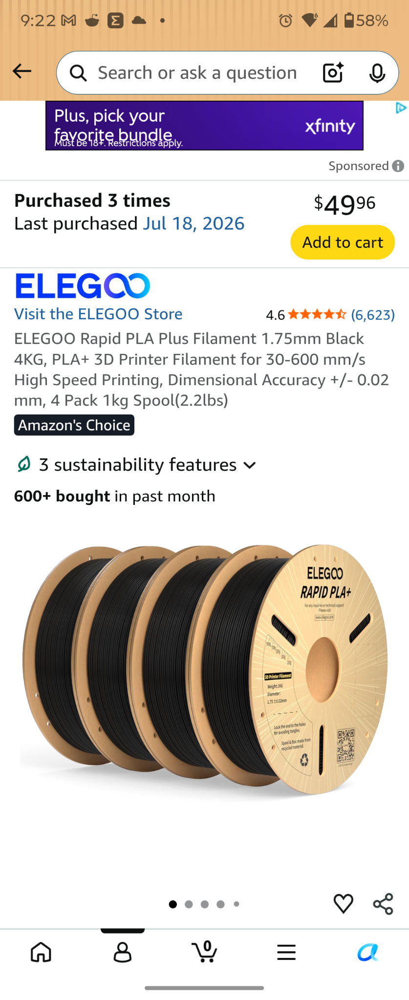
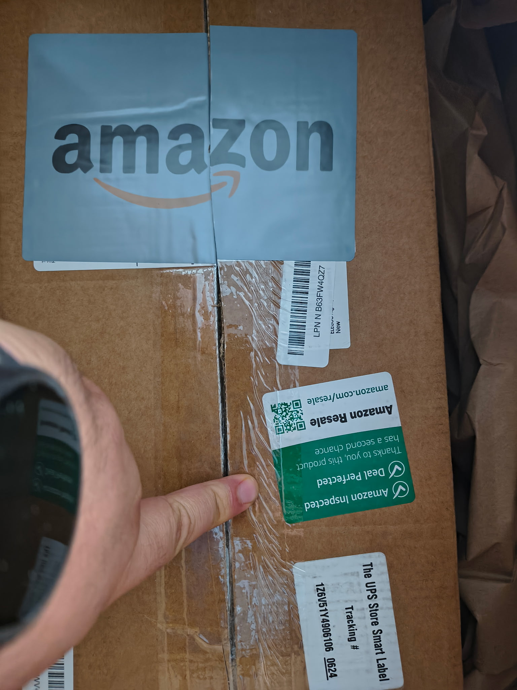
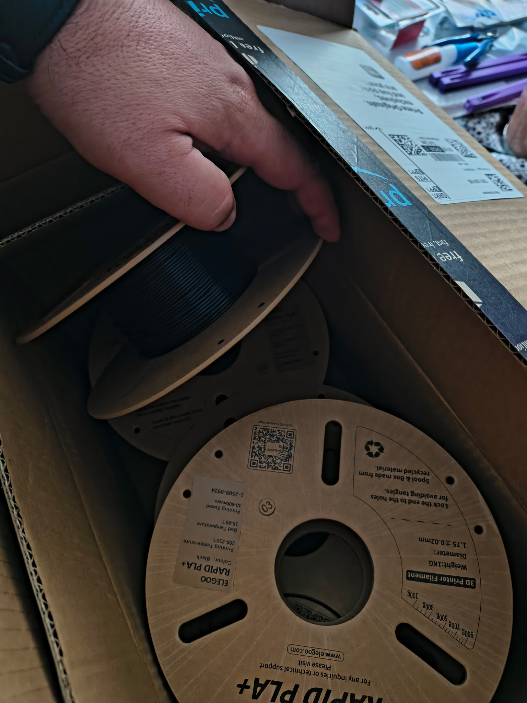
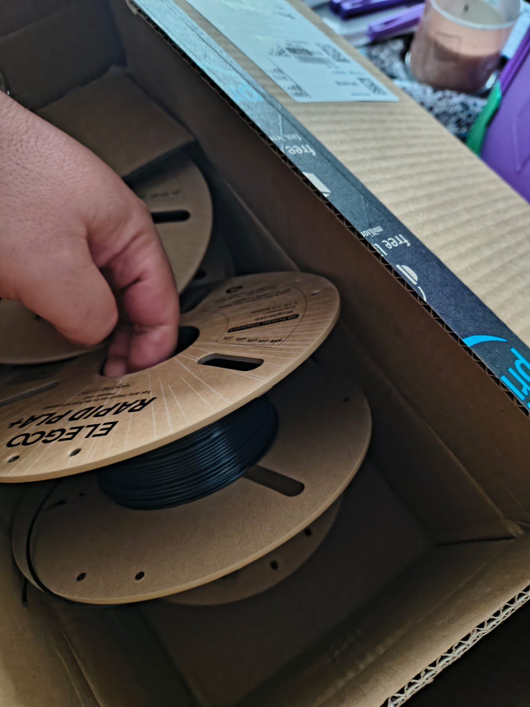
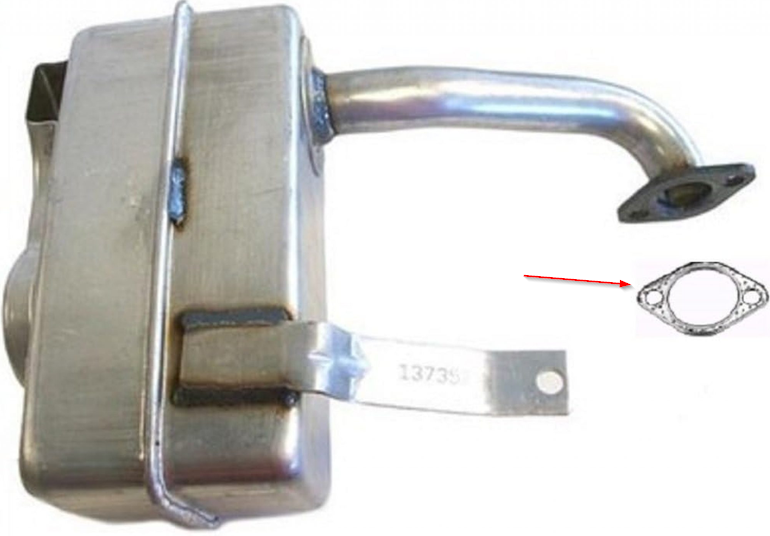

Captains Log

July 18th 2026
FUCK AMAZON!
I don't think I have to say it, but ya know it is what it is. I don't mean the Amazon Forest. I'm referring to amazon.com. They have been leaning hard into the "enshitification" of the world and all things digital, and I've reached the end of my rope as a result. I have been turning a blind eye to the problems they have been throwing at me but I have now found the straw that broke the camels back. In an effort to not sound like I'm the ridiculous one, I'll give some back story.
- Price Hikes
- Like all retailers and streamers Amazon has been steadily raising the price on their Prime subscription. I have been justifying this for years with the thinking that it's still a good value I get streaming, 2 day shipping, music, etc.
- They put ads on the streaming service, and still use it to push renting/buying of digital media. I had years of ad free tv shows, so for them to raise the price continuously and then slap ads in and still raise the price again, is insulting and frustrating. If they want to get more value out of that, maybe they should seperate that from their Prime Service.
- The digital market place also frustrates me. The amoutn of times I'm looking for a movie or show to see it on Amazon Prime, only to click the result and see it's for rent or sale is extermely frustrating. I know that other services do this as well, such as Apple, but that doesn't mean I like it.
- Their music straming is bad. I just don't like it.
- 2 Day Shipping
- This year alone I have had several times I've placed an order and it did not ship when Amazon said it would. Often times I'll order something from Amazon because of this. I could go to another store and get it, but when they say it can arrive in 2 days or in some cases next day, I'll just use Amazon for the convenience, but when they don't meet that end of the agreement, then it loses that conveneince factor.
- This year I've had 2 orders just not ship. One sat for a month "processing" and I had to manually cancel it and re-order it. I know that Amazon uses third party vendors, but if they want to allow them on their site they need to set standards and hold people to it, if they do not or don't want to, then you can't be upset when your customers do by leaving your platform.
- Recently I purchased a Macbook Neo. I looked at my local Best Buy first and they didn't have it in the color that I wanted but Amazon did, and they promised next day delivery. I ordered it, but it never shipped. I didn't ask for next day delivery, they prompted me for it, then couldn't live up to their own promise. I cancelled and drove to a different Best Buy further away.
- Finally - Sending me the wrong Shit
- A few years ago I ordered my first 3d printer off Amazon. I used them mostly because they had reviews I trusted, and I knew I wouldn't have to wait for it to ship from overseas. What I recieved was not a 3D printer, it was a box of Tim Hortons coffee. I was able to return it, but I'm waiting for the day for them to blame the scam on me. If that happens then what? They claim they sent me the correct item, I say it's not and I'm just SOL. Lets be honest, they don't have to fix it, it's your word against theirs and you have little recourse if they disagree.
- Last year my wife ordered a mattress for our son's bed. The one that was sent was too small. The box said it was the wrong size but she wanted to open it and see. Once you open one of those boxes there is no putting the genie back on that bottle if you know what I mean. She decided to keep it, though the one we received was cheaper and smaller than the one ordered.
Finally, the final straw came this weekend. On Friday I ordered a new case of filament for my FDM printer. Amazon promised next day delivery, which I was stoked about. I planned my 3D printing project this weekend around receiving that box. When it was delivered I stopped what I was doing and picked up the box as the Amazon truck was backing down the driveway.
I knew immediately it was wrong. Four spools of filament should be nearly 9 pounds. This thing felt like it weight 1. When I opened the box, there was another box inside that had a USPS label on it, and an Amazon certified return sticker.
I've seen where people have been scammed like this in the past on Reddit, but it never happened to me so I was happy to keep going along in my little bubble, but it finally happened to me. I guess what people do is they order the filament, use 99% of it, put it back in a box and return it, and no one asks a single question.
What upsets me the most isn't that I was scammed, it was that I still trusted Amazon. No where on the listing did it say I was getting opened or used items. If it had I wouldn't have ordered it. In fact I have placed this same exact order at least 4 other times with Amazon and had no problems. This time though I got screwed.
It feels like someone spit in my face, and there are several failures that happen that make this possible. The weight alone, makes it nearly inconceivable for me to see how this would be approved to ship. It was returned to USPS, who I know weighs things for shipping, and no one raised an eyebrow that it was way under. It shipped to a DC, where again it was picked up, and no one noticed it was way under weight? It was put on a shelf and then resold, and the picking person didn't notice it was under weight, and then it was put on a truck for delivery, which I know they have to be concerned about weight there too, and no one, not a single soul, noticed? Impossible. Just no one cares.
Amazon is shipping me a replacement. I will be returning this order. I'm done though. I cancelled my Prime account, and I opened a new credit card. When it arrives I'll transfer the balance from my Amazon card to that and close the card. The trust is gone, and I will not willingly pay for poor service.




Mower Spark Plug

I replaced the spark plug on my mower today as well. It turned out to be both easier and more difficult than I thought it would be. The first hurdle I ran into was that I didn't have an 8mm socket.
I was able to use a 5/16" standard socket. Well it was kind of a socket. I actually didn't have one for my socket wrench, but I did have one for a screw driver. I was able to get 3 out of 4 screws out with it, but it was difficult because I couldn't really get the torque I needed, at least at first. I eventually did, but like I said it was difficult. The 4th screw though it was tucked behind the top of the steering column and I couldn't reach it.
I went to Harbor Freight and bought a whole metric set with a 1/4" drive. I was going to buy the tools as ICON since they have a lifetime warranty, but I noticed that the Pittsburgh Tools also have a lifetime warranty so I bought those instead. I also purchased the extensions, which is what I went to the store for to begin with.
It's crazy how much easier things get when you use the right tools. I had that final bolt out super fast, and from there it was super easy to swap the spark plug. I made sure I had the right gap first, but it was a super easy swap.
I changed the oil then and started it right up. Imagine my surprise when it was still super loud! I understand and know the thought process behind making sure when you get off the seat of your mower, that the engine shuts off. It's a deadman switch and its to ensure people don't hurt themselves. You knwo what one of the consequences of this is though? It's very difficult to troubleshoot an issue with the motor, if you cant see the mower!
Katie came out to help me though and sat on the mower while I tried to determine why it was so loud and found out that the exhaust was not mounted to anything. The pipe appears to have fallen off. What a time to stop using Amazon! I purchased replacement parts via CubCadet, but had to pay for shipping and wait for it to ship as well. Hopefully it arrives soon, I don't want to have to push mow my whole yard!
I had to buy a gasket and a some bolts. I didn't want to buy bolts directly from CubCadet, I can get bolts anywhere but I couldn't for the life of me find the bolt size. Once they arrive it should be an easy and quick fix.